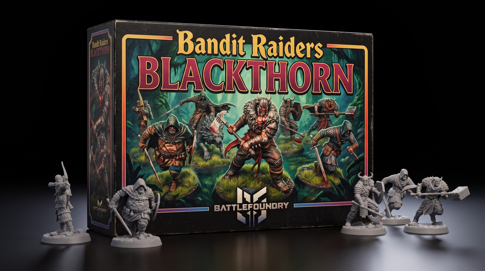

Zenithal Drybrushing Guide for 3D Printed Minis
August 09, 2026

Start with a matte black primer on your 3D printed miniatures. Spray a top-down white zenithal highlight strictly from a forty-five degree angle above the model. This step establishes realistic contrast before you open a paint pot.
Grab a soft round makeup brush for heavy drybrushing. Load light grey paint and wipe off almost all pigment onto a paper towel. Dust the raised edges across the grain of the sculpt. Repeat with pure white on only the highest surfaces. High-detail free STL miniatures reward light, fast passes instead of thick coats.
Apply translucent glazes or speedpaints over the monochrome base. The black recesses stay dark while the white zenithal drives bright color reflections. You get smooth volumetric gradients on tabletop RPG minis in a fraction of the time.
Finish with a crisp edge highlight on key focal points like blades, eyes, and armor trim. Miniature painting pops on the game board when you push your brightest highlights strictly where light hits hardest.
Get free miniatures:
- Fantasy: https://cults3d.com/@BattleFoundry
- Scifi: https://cults3d.com/@BATTLEFOUNDRYSCIFI
- Grimdark: https://cults3d.com/@DREADWORKS
- Resin Statue: https://cults3d.com/@BlacksiteSyndicate